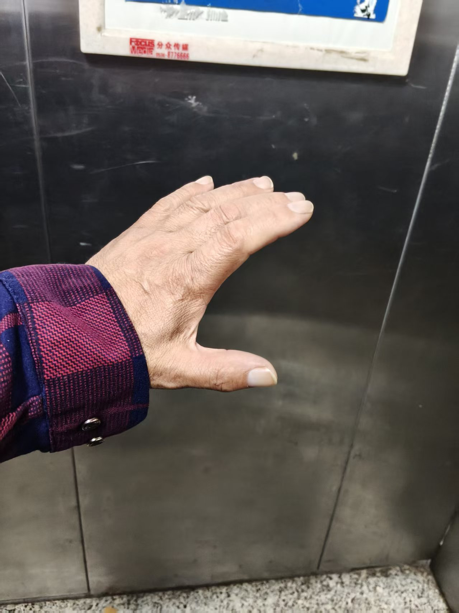
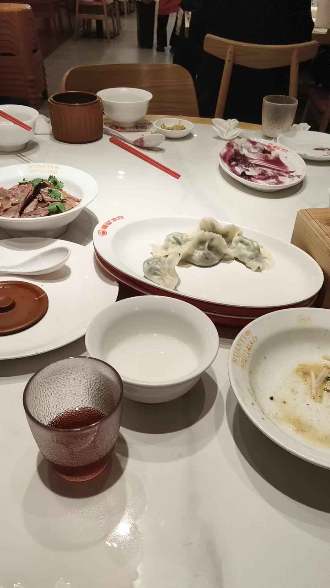
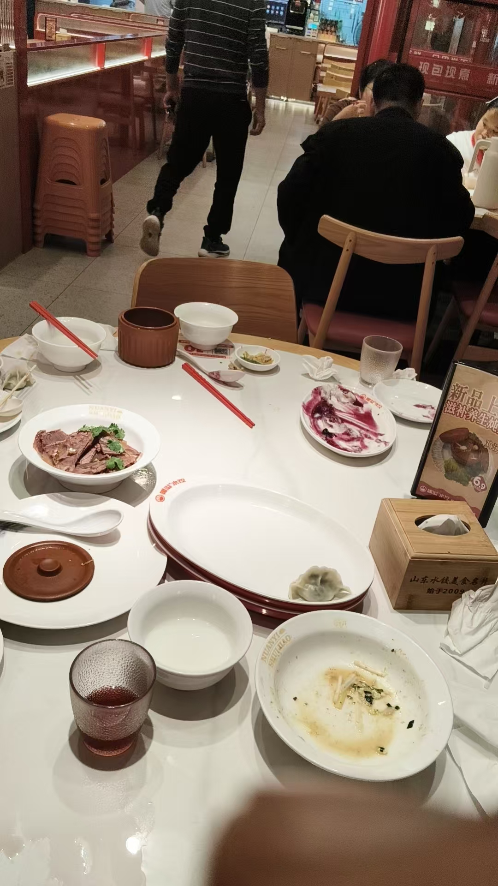

20261013早上，晚上各一次九转五行
修炼修行道家 原始对话记录
发现手上耀眼的彩光
有缘的学生要到了
咋的这学生比较厉害还是啥
放啥光
这个是彩光
所以，这学生过去未来，是佛家的
放紫光，一般是道家的
紫光是老君
老君来助力教学，提前分辨清楚
学生的过去，经过，未来，都让我看的一清二楚
所以，不是我教学
[呲牙][呲牙][呲牙]
白亮是道家的
八仙是道家的，老君的弟子
所以，教学中，八仙回来助力道家弟子
金色是啥？
佛道都有金光
道家的天将，佛家的佛子都主要放金光
一惠一惠
下一步，
肉身放光
放出体外
放大光明
实际还是性体放光
现在要转换成肉体内的放光点，能量光球，放光
这样修，性命双修
现在的修法，性命不能合一
能量光球放出去就能感知透视了吗？
身体光化，是修复
身体越通透，眼睛越清楚
相辅相成
并不是放光就透视
[呲牙][呲牙]
李虹，肉体发热
发烫
化掉阴霾
身体热过之后，进入初地菩萨
现在正在转化中
@呼和浩特 陈呼和
身体明亮度增加，还有小灰
这并不是夸你
只是明亮度增加
半明半暗，依然是常人
练的不够勤奋
应该早上，晚上各一次九转五行
提升的快
[呲牙][呲牙]
[抱拳]
[鼓掌][鼓掌][鼓掌]
内观内观
先看到自身明亮度
自己还看不清楚自己
谈不上透视别人
自身明亮度，看的是性光体
这个容易看到
心眼，觉眼
肉体是实体本来就不会通透
性光体明亮度足够了，才能清楚地看到内脏
先看清楚自己
内观内观，实实在在的看清楚自己
别只看这个名词
著书立说阐真诠
咋冒出这一句来
还点出言子旁诠
昨晚下了一夜小雨
应该差不多够了
还在下
想起那个高我，抱着腿，坐在地上，普通衣服被淋湿
孤苦无援的样子
怪不得，借不上力
原来不如我肉身修的好
还好我有返修的方法
何等为法？法名离染、法名无相、
法名无为、法名无归处、
法名无生无起无得、法名无比，
于是法中以相分别，
取舍戏论是名非法。
一一自在王菩萨经
🍁何等是法，所谓不破诸法实相，
是名为法。
一一摩诃般若波罗蜜经
[呲牙][呲牙]
到底念力多强
研究生拿国奖
二百分三百多分的都不敢报
我让学生报了国奖，一百多分
稳中国奖两万块
刚才，说公示审核
低两分的同学，审核出现问题，国奖被刷下来了
也就是没有了
咱们的学生依然稳坐钓鱼台
今天公示结束，就不再有异议
稳拿到手了
就是神助
所以，今晚，请吃饭
我说，西边，很干净，中档次的一个地方
于是定了，暖溢水饺
这就是选择
还有一个农家土菜馆，以前常去
但这次，答谢神仙，土菜馆就灰，也就是不合适
再就是陪同喝酒的人
几个身上灰的也不通知了
选择很重要
这就是法术对人事的实战应用
看似简单，用到生活细节之处

我为什么救贱人
不知道错在哪里

花钱不多
明白吗
拿到两万
就忘了
怎么来的
今晚
勺子酒杯乱动
就跟我说
真人别气
今晚
我记忆一辈子
六年
付诸东流
这
就是遭报应的
不是开始
而是继续
请我喝酒
这么大的福德
第一个
哈哈哈哈
喝酒回来了
学生
我一边走一边骂
过来小两口
很有正义感
抓住我的手
呵呵
我的手千斤力
问我，你为什么骂人
呵呵呵呵
勇气可嘉
我说，你问问
我是不是他父亲
学生说是
放开手
我说你旁边的女生
你知道是谁吗
跑了
感恩真人师父指导我定努力
[强][强][强]
手上的彩光
"发现手上耀眼的彩光。"
先出来的是这一句。接着他自问：这学生比较厉害，还是啥。
然后自己答了。"这个是彩光。所以，这学生过去未来，是佛家的。" 放紫光，一般是道家的。紫光是老君——老君来助力教学，提前分辨清楚。白亮是道家的。八仙是道家的，老君的弟子，所以教学中八仙回来助力道家弟子。金色呢，佛道都有金光，道家的天将、佛家的佛子，都主要放金光。
"学生的过去，经过，未来，都让我看的一清二楚。所以，不是我教学。"
下一步是肉身放光。放出体外，放大光明。他说，实际还是性体放光。现在要转换成肉体内的放光点，能量光球，放光。这样修，性命双修。"现在的修法，性命不能合一。"
有人问，能量光球放出去，就能感知透视了吗。他答得干脆：身体光化，是修复。身体越通透，眼睛越清楚，相辅相成。"并不是放光就透视。" 这两件事在他是分开的，一个修，一个用，不能倒过来想。
李虹的反馈被点了名：肉体发热，发烫，化掉阴霾，身体热过之后进入初地菩萨，现在正在转化中。陈呼和的评语更直白——身体明亮度增加，还有小灰。他回："这并不是夸你，只是明亮度增加。半明半暗，依然是常人。" 练得不够勤奋，应该早上、晚上各一次九转五行，提升得快。
于是说到内观。先看到自身的明亮度。自己还看不清楚自己，谈不上透视别人。自身明亮度，看的是性光体，这个容易看到——心眼，觉眼。肉体是实体，本来就不会通透。性光体明亮度足够了，才能清楚地看到内脏。"先看清楚自己。内观内观，实实在在的看清楚自己，别只看这个名词。"
中间忽然冒出一句"著书立说阐真诠"。他自己也奇怪，咋冒出这一句来，还点出言字旁那个诠。
昨晚下了一夜小雨。他想起那个高我，抱着腿坐在地上，普通衣服被淋湿，孤苦无援的样子。"怪不得，借不上力。原来不如我肉身修的好。" 还好有返修的方法。法名离染，法名无相，法名无为，法名无归处，法名无生无起无得，法名无比。
后面落到一件很具体的事。到底念力多强——研究生拿国奖，二百分、三百多分的都不敢报。他让学生报了，一百多分。"稳中国奖两万块。" 公示审核时，低两分的同学出了审核问题，国奖被刷下来。咱们的学生依然稳坐钓鱼台。
今晚请吃饭。他说，西边，很干净，中档次的一个地方。于是定了，暖溢水饺。还有一个农家土菜馆，以前常去，但这次答谢神仙，"土菜馆就灰，也就是不合适"。再就是陪同喝酒的人，几个身上灰的，也不通知了。
"选择很重要。这就是法术对人事的实战应用，看似简单，用到生活细节之处。"
喝酒回来，学生跟着。他一边走一边骂。过来小两口，很有正义感，抓住他的手。他的手，千斤力。问他，你为什么骂人。他说，你问问，我是不是他父亲。学生说是。手放开了。